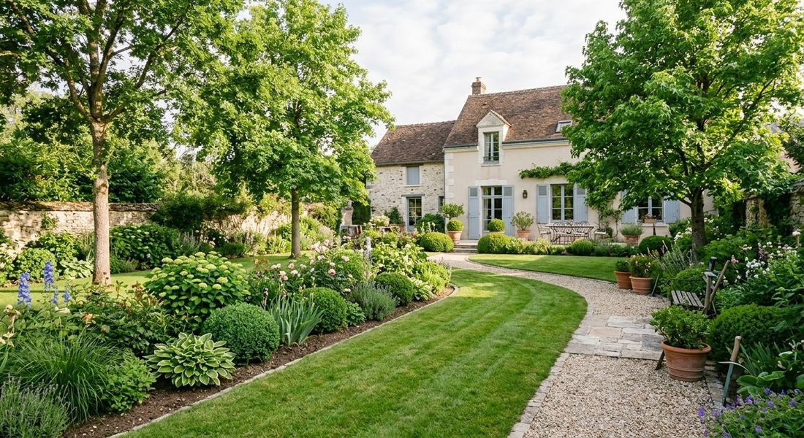
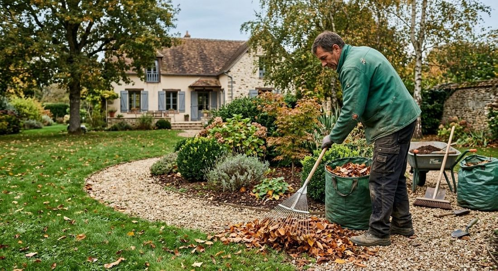
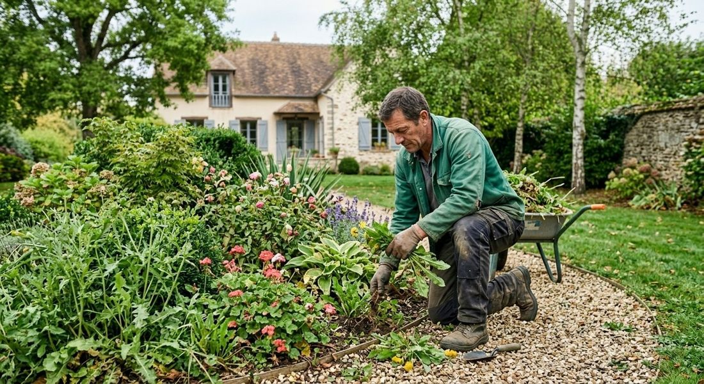

Zéro pesticide
Des solutions naturelles pour entretenir vos espaces verts.
Paysagiste à Montigny-le-Bretonneux (78)
Biovert Jardins entretient et crée les jardins des particuliers, copropriétés et entreprises dans les Yvelines : entretien, aménagement paysager et élagage, avec des solutions naturelles.

Nos prestations
Un suivi régulier ou une intervention ponctuelle, selon vos besoins.

Tonte, taille de haies et d’arbustes, désherbage manuel, fertilisation naturelle et paillage : des passages mensuels, bimensuels ou selon vos besoins.
En savoir plus →
Nettoyage de printemps ou d’automne, taille de rajeunissement, évacuation des déchets verts : sans engagement à long terme.
En savoir plus →
Massifs fleuris, potagers, haies, allées, paillis et bordures, avec des plantes locales et une gestion de l’eau.
En savoir plus →
Biovert Jardins intervient aussi pour l’élagage des arbres de votre jardin.
En savoir plus →Notre approche
Un équilibre entre esthétique, efficacité et respect du vivant.
Des solutions naturelles pour entretenir vos espaces verts.
Broyage, paillage et compostage pour nourrir naturellement les sols.
Respect des plantes, des insectes utiles et des pollinisateurs.
Des équipements performants pour limiter les nuisances.

À propos
Implantée dans les Yvelines, l’équipe de Biovert Jardins accompagne les particuliers, les copropriétés et les entreprises. Entreprise de service à la personne déclarée depuis 2014.
Biovert Jardins soutient aussi le club FC Versailles : engagement, esprit d’équipe et ancrage local.
Notre zone d’interventionContact
Demandez votre devis : appelez-nous ou écrivez-nous, du lundi au vendredi de 8h à 18h.